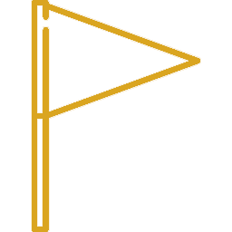
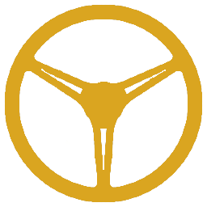

VINTAGE MOTORS
VINTAGE MOTORSHistória
A Vintage Motors nasceu da admiração pelos clássicos que transcendem o tempo. Mais do que máquinas, acreditamos que cada carro guarda momentos, memórias e sentimentos que merecem serem preservados e contemplados.


Um legado que atravessa gerações
Ao longo dos anos, a Vintage Motors foi construída e conduzida pela mesma família, transmitindo de geração em geração o respeito pela história automotiva. Para nós, cada clássico carrega uma identidade própria, resultado de uma época, de uma engenharia e de histórias que merecem ser preservadas. Mais do que um negócio, mantemos viva uma tradição dedicada a admirar, cuidar e compartilhar a grandeza dos automóveis que marcaram seu tempo.
Linha do Tempo

1999
Fundação da Vintage Motoros
2003
Primeira exposição
2007
Lançamento do nosso site

2011
Criação do Clube Old Legends
2020 - Hoje
Uma comunidade crescente de apaixonado por clássicos automotivos
Nossos Valores
Preservação
Valorizamos a história automotiva e o legado que cada clássico carrega.
Exclusividade
Selecionamos veículos verdadeiramente icônicos e de procedência
Conexão
Conectamos pessoas com a mesma paixão pelos carros vintages

Legado
Mantemos viva a memória dos clássicos para as próximas gerações
Resultados da Vintage Motors
+300
VEÍCULOS VENDIDOS
+50
EVENTOS REALIZADOS
+1.000
MEMBROS DA COMUNIDADE
+100
CLÁSSICOS RESTAURADOS